2 Typology of charts
2.1 Bee swarm plots
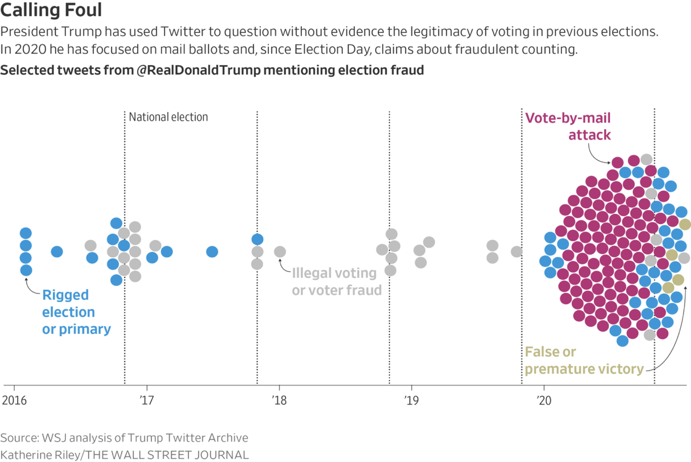
Example 2:
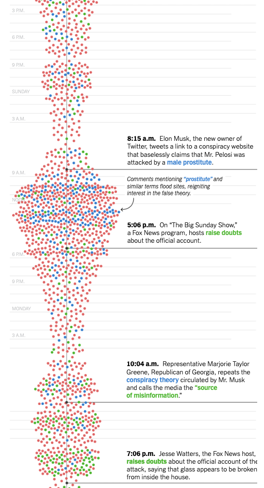
Source: Annie Karni, Malika Khurana and Stuart A. Thompson. How Republicans Fed a Misinformation Loop About the Pelosi Attack.
2.2 Grouped bar chart
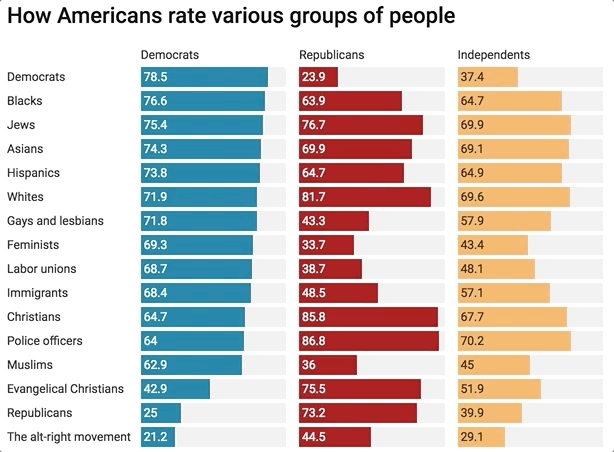
Chart: @janzilinsky; Data: Thermometer ratings from VOTER Survey.
2.3 Density plot
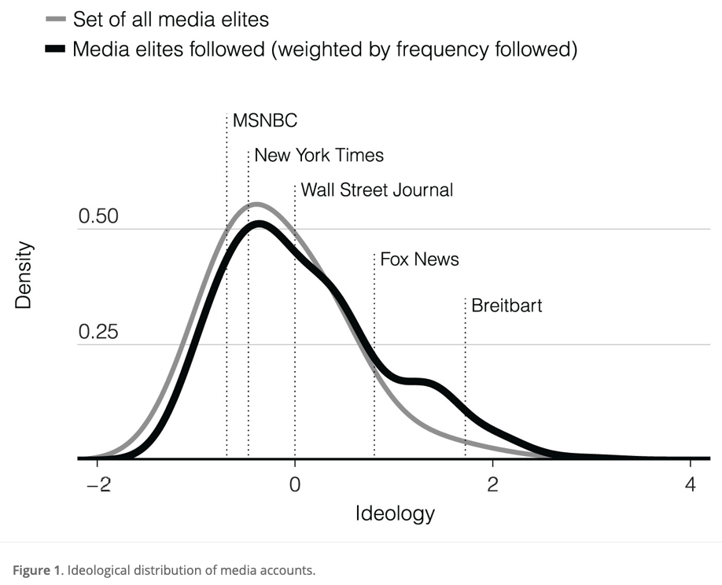
Source: Eady et al. (2019)
2.4 Joyplot or ridgeplot
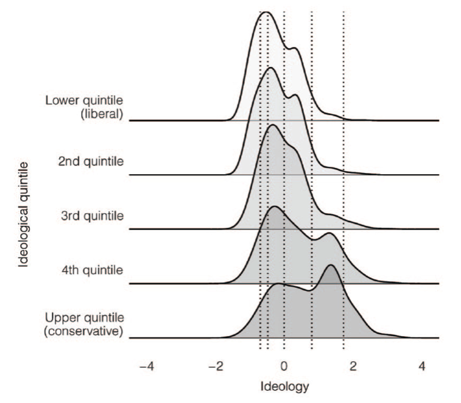
Source: Eady et al. (2019)
2.5 Heatmap
Here the cell entries of the number of cases per 100,000 people.
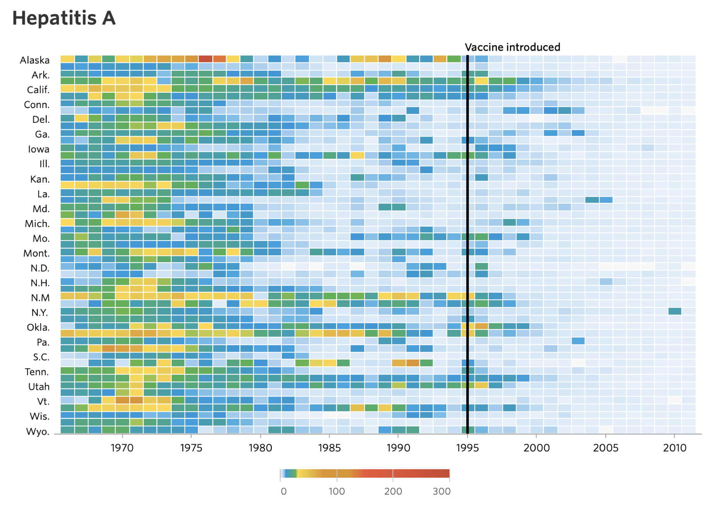
Source: http://graphics.wsj.com/infectious-diseases-and-vaccines/
2.6 Maps
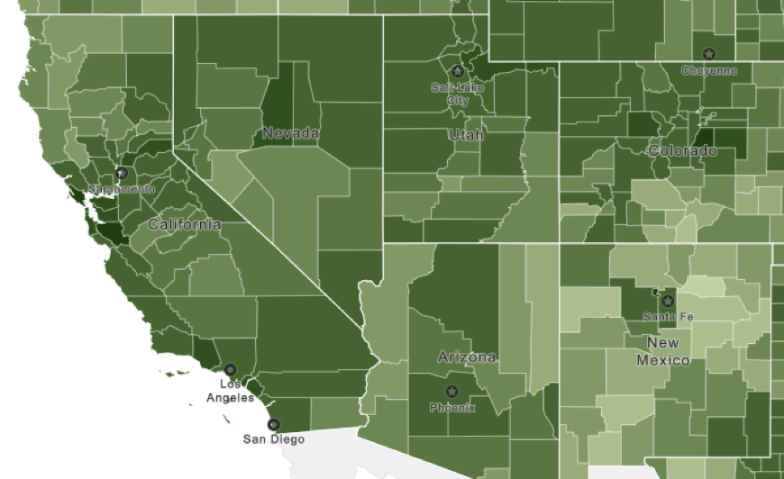
2.7 Histograms
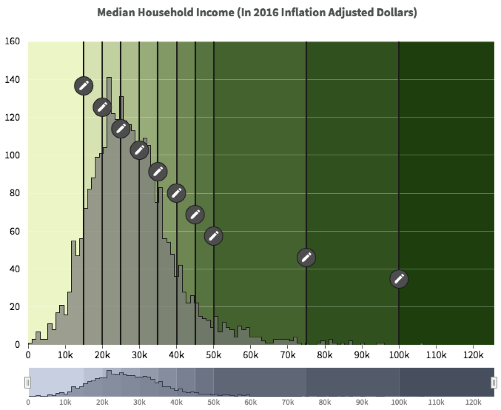
2.8 Maps with 2-dimensional color-coding:

2.9 Cartogram
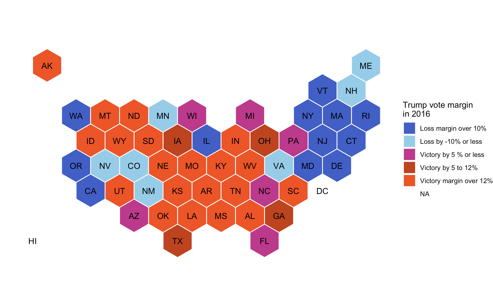
2.10 Cartogram or a heatmap?
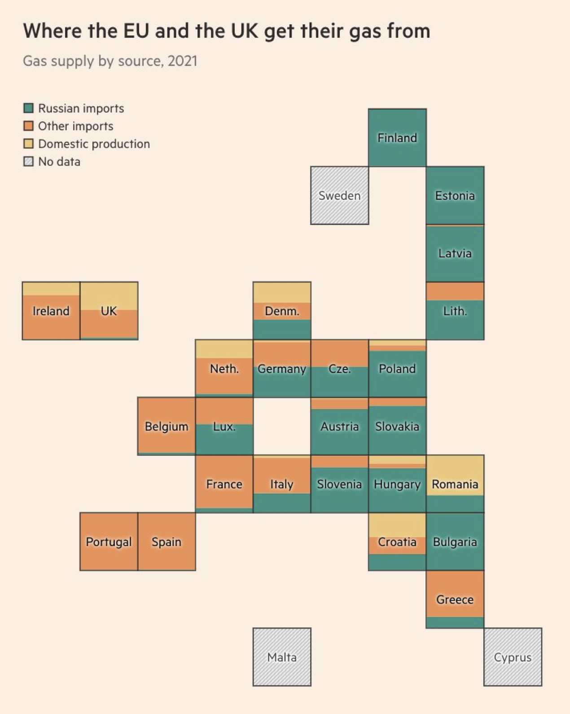
2.11 Boxplots
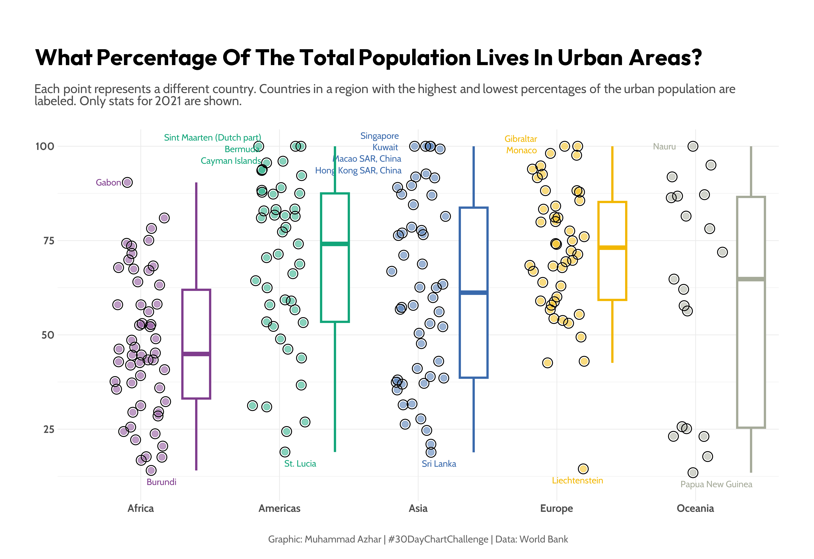
Source: imagineazhar
2.12 Types of bar charts
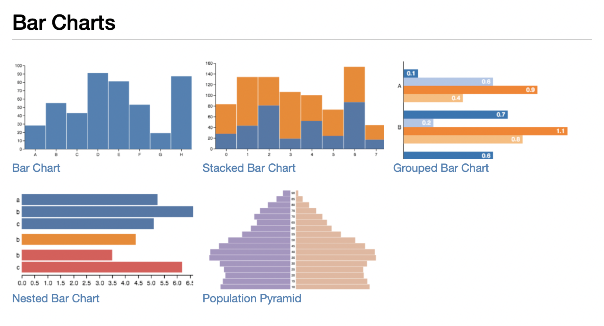
2.13 Time series plots
2.13.1 Standard line graphs
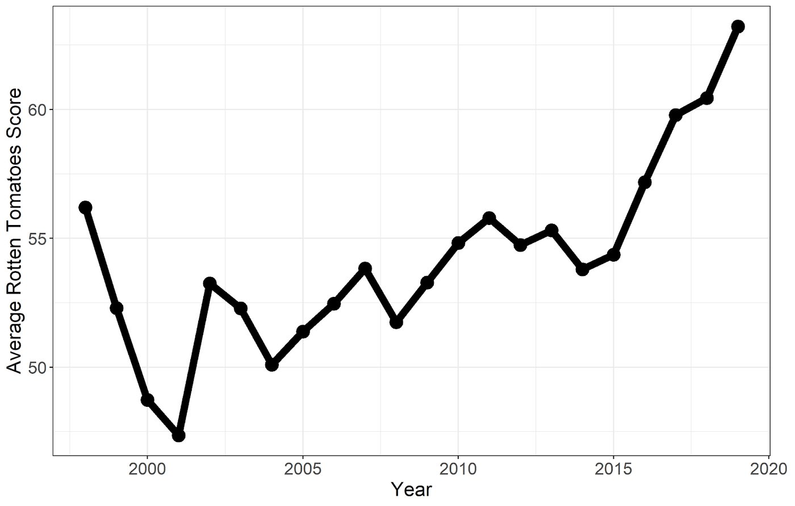
(But ask yourself: would you really believe this “finding”? What was the data-generating process? Are movies and shows really getting better?)
2.13.2 Emphasis on relative changes
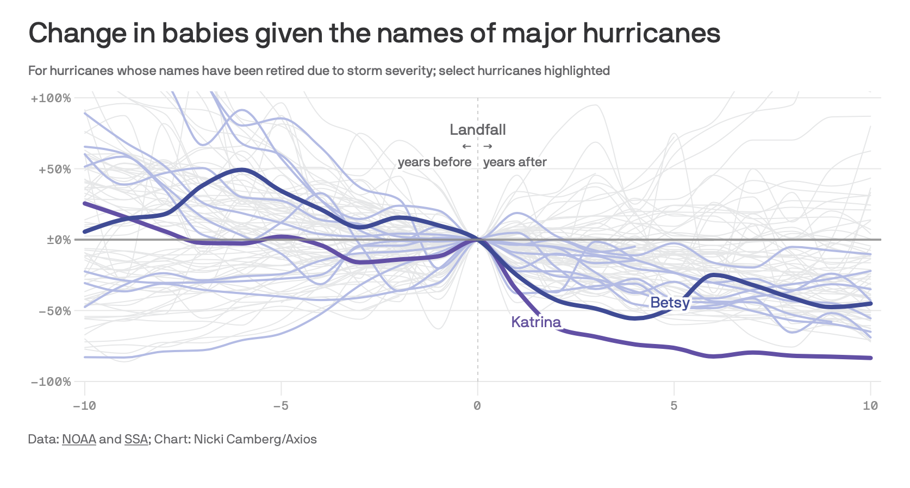
2.14 Area chart
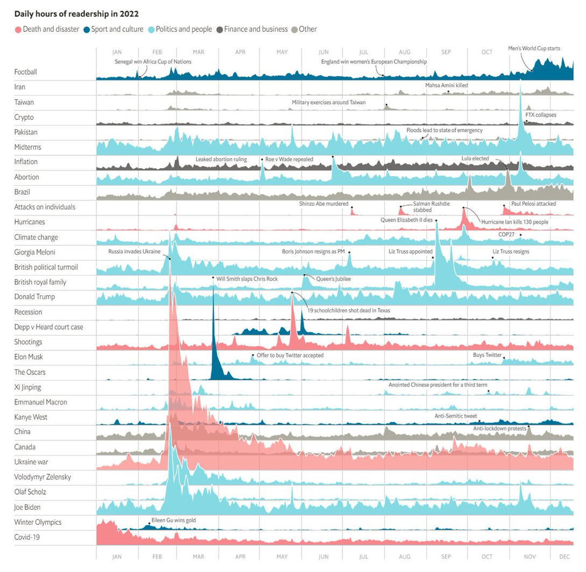
A useful resource is the set of charts shown on this website: https://vega.github.io/vega/examples/